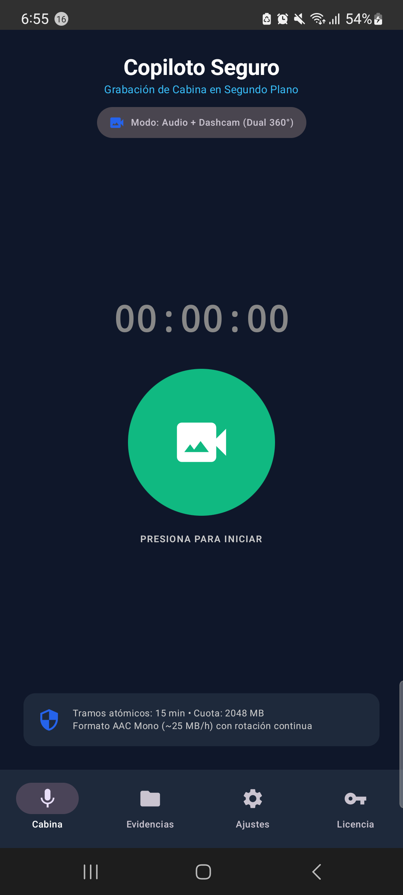
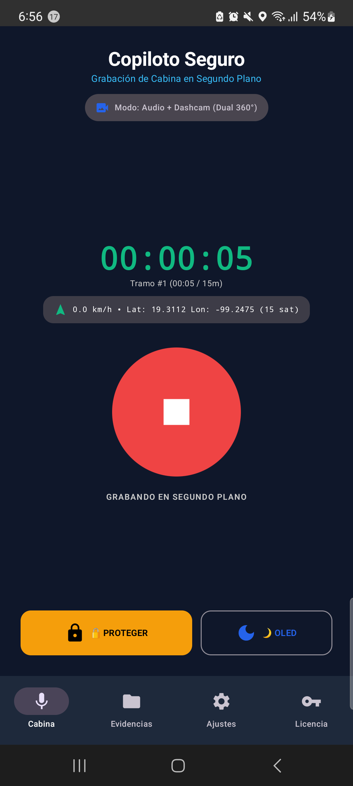
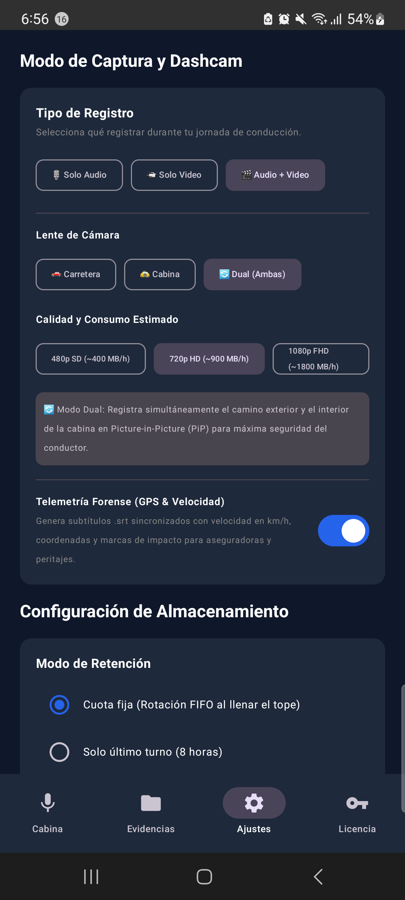
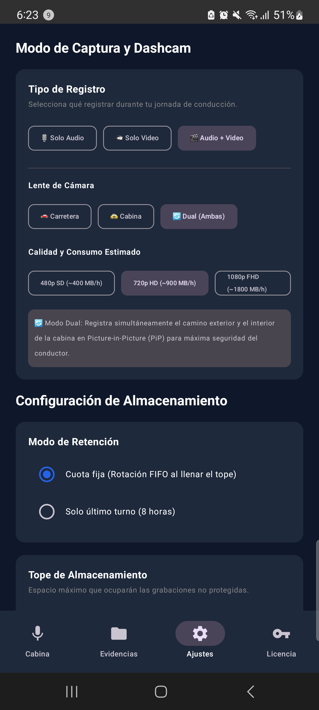
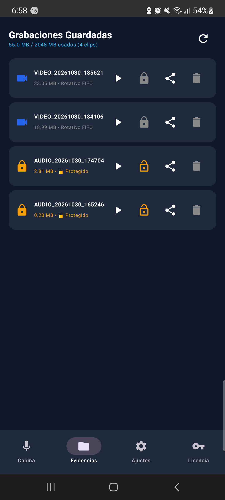
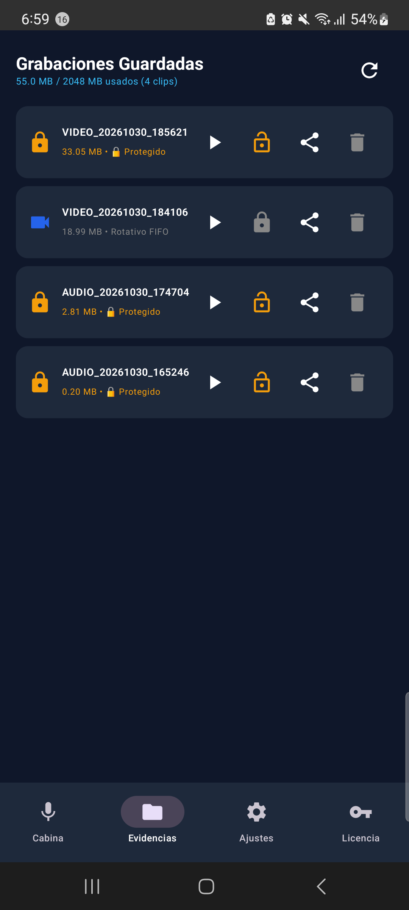
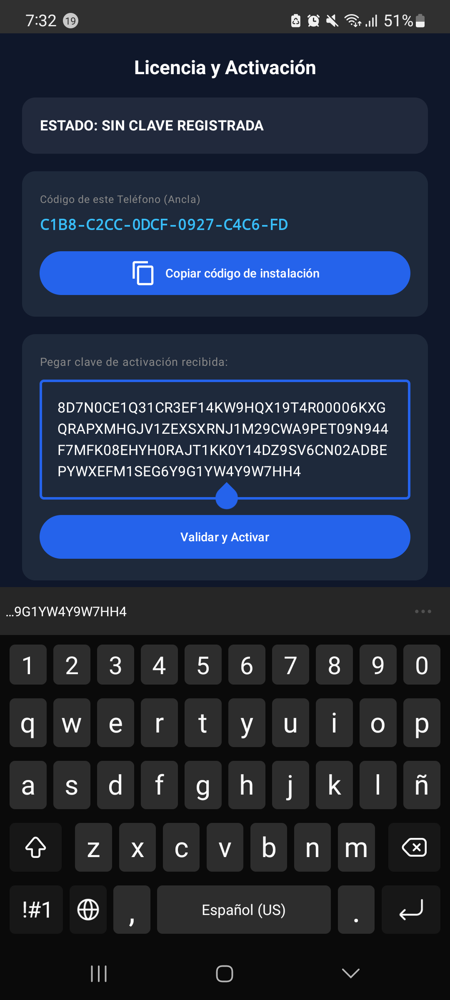
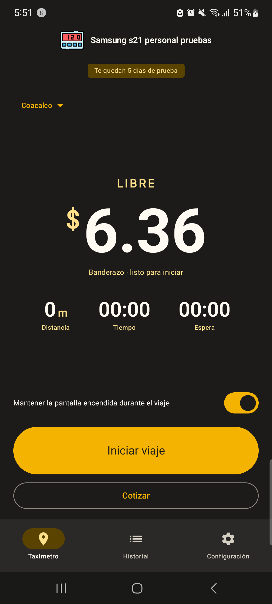

Grabadora de cabina y Dashcam profesional para Android. Graba discretamente en segundo plano con la pantalla apagada o encima de Waze/Maps. Telemetría GPS forense, sensor de impacto y cero consumo de datos.

Desarrollado para choferes de taxi, apps de transporte y repartidores que requieren respaldo visual y sonoro ante cualquier percance.
Audio nítido en formato AAC optimizado (~25 MB por hora). Graba continuamente sin saturar la memoria ni calentar el teléfono.
Grabación continua en tramos de 1, 3 o 5 minutos. Si se apaga el teléfono repentinamente, todos los tramos previos quedan a salvo.
Tú decides el límite de memoria (2 GB, 5 GB, 10 GB). Los archivos más viejos se purgan automáticamente para que nunca te quedes sin espacio.
Cada video genera un archivo de subtítulos sincronizado segundo a segundo con tu velocidad en km/h, coordenadas GPS y fecha exacta con valor jurídico.
El acelerómetro detecta impactos bruscos y bloquea automáticamente el tramo actual. También puedes protegerlo con 3 toques de volumen sin ver la pantalla.
Apaga los píxeles de la pantalla para ahorrar batería y no revelar que estás grabando. Despierta en medio segundo con un doble toque.
Toca cada pestaña para ver capturas reales tomadas directamente de un Samsung Galaxy S21 en funcionamiento.
Visualización limpia tipo HUD con botón táctil central de grabación, estado satelital GPS con coordenadas y accesos instantáneos de protección y modo OLED.

El servicio protegido continúa grabando aunque bloquees la pantalla o abras el navegador Waze o Google Maps.

Personaliza la duración de tramos atómicos (1, 3 o 5 min) y el límite de memoria asignado para la rotación automática FIFO.

En teléfonos con soporte multiprocesador de cámara, graba simultáneamente el camino hacia adelante y la cabina interior.

Explorador de tramos con tamaño, duración, archivos de subtítulos sincronizados .SRT con valor pericial y exportación rápida.

Al detectar un choque o al pulsar 3 veces cualquier botón de volumen, el tramo en curso se blinda (.locked) y jamás es borrado por la rotación.

Activación sin internet mediante ancla de 22 caracteres hexadecimales y firma criptográfica asimétrica.

Ambas herramientas corren simultáneamente en segundo plano, permitiendo cobrar el viaje con Banderazo mientras Copiloto Seguro graba la cabina.
Una solución completa de ingeniería pensada para el trabajo real.
| Característica | Copiloto Seguro | Dashcam Física Tradicional | Apps Genéricas de Video |
|---|---|---|---|
| Costo de inversión | Cero equipo extra. Usa tu mismo celular. | $1,500 - $3,500 MXN + instalación | Gratis pero saturadas de anuncios |
| Conexión a internet / Privacidad | 100% Offline. Tus videos son solo tuyos. | Offline (tarjeta SD frágil) | Exige datos y sube telemetría |
| Operación en segundo plano | Graba con pantalla apagada o Waze al frente. | Fija al parabrisas, visible al pasaje | Se congela al minimizar o apagar pantalla |
| Telemetría forense jurídica | Subtítulos .SRT sincronizados (km/h y GPS) | Texto quemado en video de baja nitidez | No disponible o imprecisa |
| Protección ante asalto o choque | Acelerómetro G + Botones de volumen | Se la pueden arrancar y robar | No detecta impacto ni pánico |
Te regalamos 6 días naturales continuos con todas las funciones 100% desbloqueadas (Grabación de Cabina, Dashcam HD, Cámara Dual, Telemetría OSD y Botón de Pánico). Evalúala en tu unidad de trabajo real durante tu jornada.
Descarga directa del instalador APK para Android y el manual del conductor completo en formato PDF listo para consulta.
Todo lo que necesitas saber antes de instalar Copiloto Seguro en tu dispositivo.
Sí, absolutamente. Copiloto Seguro utiliza un servicio en primer plano protegido por Android 14+ que continúa capturando audio y video aunque minimices la aplicación, bloquees el teléfono con el botón de encendido o tengas Waze, Google Maps o el taxímetro Banderazo abiertos al frente.
La aplicación cuenta con rotación circular FIFO inteligente. Tú defines un tope de almacenamiento en los Ajustes (por ejemplo, 5 GB). Cuando la memoria asignada se llena, la app elimina automáticamente los tramos más viejos para dejar espacio a los nuevos. Los archivos que hayas protegido ante un choque o con el botón de pánico jamás se borran.
Si sientes que una situación de riesgo está ocurriendo en tu unidad, presiona rápidamente 3 veces seguidas cualquier botón de volumen de tu teléfono. El sistema emitirá una vibración silenciosa de confirmación y marcará el tramo en curso con candado de protección permanente (.locked) sin que el pasajero sospeche nada.
No. Copiloto Seguro es 100% offline. No consume ni un solo megabyte de tu paquete de datos ni sube tus grabaciones a ningún servidor en la nube. Todas tus evidencias y archivos de telemetría quedan resguardados exclusivamente dentro del almacenamiento interno de tu teléfono.
En la pestaña "Evidencias", presiona el botón "Exportar a USB / Carpeta Pública". La aplicación copiará instantáneamente todos los videos y subtítulos .SRT a la carpeta estándar Descargas/CopilotoSeguro/ de tu teléfono, de donde podrás conectarlo a cualquier computadora con cable USB o pasar los archivos por WhatsApp o memoria externa.